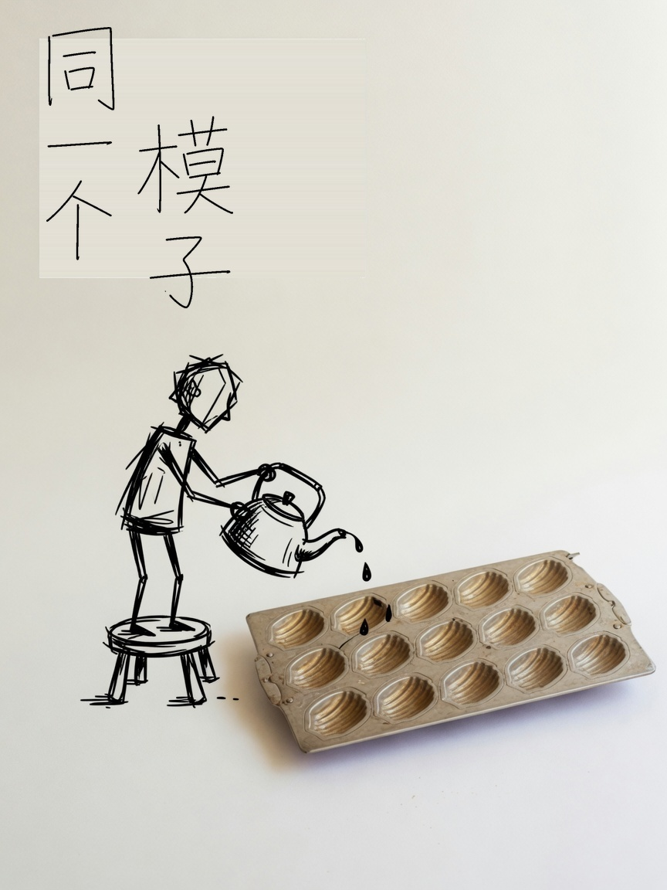

工程一册
跑模型之前
先把机器打通
目录、命令、代码、箱子。这一册不点滑块。讲怎么用，不讲怎么装。地板不熟，上面的公式跑不起来。
先接通。再谈上面跑什么。
- 01机器目录、权限
- 02说话把命令串起来
- 03写码盒子、闭包
- 04算数张量和表格
- 05上线库、接口、箱子
01
Linux：没有盘符，只有一棵树
Windows 用 C:、D: 把世界切开。Linux 用一棵树：根叫 /，往下全是路径。硬盘、进程、网卡，最后都能在某个文件名下面找到。
打个比方
/home 是书桌，/etc 是墙上的开关，/opt 是后来搬进来的大家电，/var 是会不断写的流水账，/usr 是已经装好的家具。模型权重、conda 环境，优先放 /opt 或自己家目录，别塞进 /usr。
一切皆文件。枝杈就是路径。
去互动版点开这棵树
认路了。下面是和机器说话。
02
命令与权限：谁能碰这个文件
命令不是魔法单词，是 /usr/bin 里的小程序。权限则是「谁能碰这个文件」。把这两件事摸熟，后面的脚本、Docker、SSH 都只是在复用它们。
日常那几下
pwd / ls / cd：我在哪、有什么、去哪cat / tail -f / less：看内容，日志跟ps / top / kill：进程。先别急着 -9
权限九个开关
- 属主、属组、其他人，各 rwx
- r=4、w=2、x=1，加起来就是 755、644
- 目录要有 x 才能
cd 进去
去互动版拧 chmod
命令敲多了就要写成文件。那就是 Shell。
03
Shell：左边吐出的，变成右边吃的
脚本第一行 #!/bin/bash 是在指定「用谁来读我」。变量默认全是字符串，等号两边不能有空格。
管道是灵魂
ps -ef | grep python 读作：列出进程，滤出 python。每个程序只做一件小事，用 | 接起来。单引号原样、双引号展开变量、不打引号还会把 * 当成通配符。
左边吐出的，变成右边吃的。
去互动版看引号怎么展开
机器听懂命令了。下面用 Python 描述数据。
04
Python：先分清四只盒子
语法规则一天就能混个眼熟。真正决定你会不会写的，是四只盒子：list、tuple、dict、set，以及它们可不可变。
面试只爱问一件事
list 可变、不能当字典的键；tuple 不可变、能被哈希。里面嵌了 list，那个 list 仍可变。方括号立刻造出整份 list；圆括号不造容器，它返回生成器。
盒子形状不同，能装的东西也不同。
去互动版换四只盒子
盒子会装了。进阶压成三叠。
05
闭包、三器、三程
闭包把状态揣走；三器分别解决遍历、内存和监控；三程决定 CPU 密集还是 I/O 密集该派谁上场。
三器
- 迭代器：能
next 的东西
- 生成器：函数里
yield，省内存
- 装饰器：闭包的语法糖，给函数加外套
三程
- 进程：各有一份内存，适合 CPU
- 线程：共享内存，但有 GIL
- 协程：等网络时让出，适合 I/O
去互动版看口袋还在
数字一多，盒子就慢。换整齐的格子。
06
NumPy 与 Pandas：张量和表格
list 能装东西，但装一百万个数就慢，还不能广播。NumPy 的 ndarray 是「同一类型、矩形、连续内存」。Pandas 在它外面加了标签，变成 Series 和 DataFrame。
对齐再运算
NumPy 按形状广播，Pandas 按索引对齐。对不齐的格子不是 0，是「空」。loc 按标签，iloc 按下标，这是面试里最爱挖的坑。
去互动版看广播
表要存住，就进库。
07
MySQL：把表问清楚
库是文件夹，表是带类型的 Excel。SQL 不是编程语言，是「描述你想要什么」的语言。
五个字母
DDL 建结构，DML 改数据，DQL 查询，DCL 管权限，TCL 管事务。JOIN 是按键把两张表对齐。事务四件事：原子、一致、隔离、持久——要么全成，要么全不当真。
去互动版写一句 SELECT
表会问了。把函数挂到门口。
08
FastAPI：把信封推进门缝
浏览器打过来的是 HTTP。FastAPI 做的事：按路径找到函数，把参数从 URL 或 JSON 里拆出来，校验类型，再把返回值变成 JSON。底下用 Uvicorn 跑，调度靠协程。
请求是信封。函数在门后面。
去互动版点一个接口
「在我电脑上能跑」就是这样来的。
09
Docker：模子可以复印，账本不能印在纸杯上
没有容器的时候，开发机和服务器永远差那么一点：Python 版本、系统库、环境变量。Docker 的目标是一次打包，到处跑。
数据要另放
镜像是只读模板，容器是跑起来的进程。箱子扔了，写在箱子里的盘也没了。所以数据库、上传文件、模型权重，都要挂数据卷。

模子可以复印很多次。杯子里的东西要另放。
去互动版看镜像和容器
回头看一遍，地板是这条线。
10
回头看
先有一台 Linux。目录和权限让你在这台机器上走动。Shell 把走动写成脚本。Python 描述逻辑，NumPy / Pandas 描述数字和表，MySQL 把表存住，FastAPI 把函数暴露出去，Docker 把这一切封进箱子。
三个能带走的
- 一切皆文件
- 对齐再运算
- I/O 让出，CPU 独占